标准实现代码分析
发现一些智能合约实现的规律，和普通编程的区别：
- 避免使用遍历操作。
- 用空间换取时间，存储很多本来通过计算可以得到的结果。所以编程的时候要注意状态的更新。
- 由于Panic可以回滚，会大量使用Panic，和日常编程不同。
Fungible Token & Storage
NEP141为NEAR公链上的Fungible Token （以下均用FT简称）标准 。大部分NEAR上的FT都遵循NEP141标准。可以简单的认为FT就是一种虚拟货币，类似于人民币、美元等等。所有人都可以发行自己的FT，只不过有没有价值另说。
core.rs
在这个文件中，规定了4个接口在trait FungibleTokenCore中。如果我们要自行实现符合NEP141的智能合约，也可以自己去实现这些接口，不过官方已经给出了标准实现，也就是后面将要分析的代码。
ft_transfer(): 转账。ft_transfer_call(): 转账的同时调用reciever的ft_on_transfer。ft_total_supply(): 查询FT的发行总量。ft_balance_of(): 查询用户的FT存款。
core_impl.rs
关键是看这里对规定接口的实现。首先是存储信息的数据结构：
#![allow(unused)] fn main() { pub struct FungibleToken { /// 可以视为发行的FT的中央账本，记录了每个用户的存款，最重要的数据结构 pub accounts: LookupMap<AccountId, Balance>, /// FT的发行总量，其实可以从LookupMap中计算得到，但是那样的话开销太大了 pub total_supply: Balance, /// 每个Account占用的Storage pub account_storage_usage: StorageUsage, } }
我们依次看一下FungibleToken方法的实现，对于不重要的函数仅作功能介绍
-
new: 创建一个新的
FungibleToken -
measure_account_storage_usage: 通过临时插入一个Account，来计算我的中央账本中每一个Account会占用的Storage
-
internal_unwrap_balance_of(&self, account: &AccountId) -> Balance: 查询account的FT数量，如果account不存在会Panic -
internal_deposit(&mut self, account: &AccountId, amount: Balance): 给account增加amount个FT，注意发行总量也要随之改变，注意这里涉及到加法运算，小心溢出。 -
internal_withdraw(&mut self, account_id: &AccountId, amount: Balance): 给account减少amount个FT，注意发行总量也要随之改变，注意这里涉及到减法运算，小心溢出。 -
#![allow(unused)] fn main() { pub fn internal_transfer( &mut self, sender: &AccountId, receiver: &AccountId, amount: Balance, memo: Option<String>, ) }sender转账receiver amount个FT。memo是记日志的备注，不重要。发行总量不需要改变，同时涉及到加法和减法的运算，小心溢出。代码中为了提高效率，当amount为0或者sender=receiver的时候直接退出。
所以为什么之前的internal_deposit和internal_withdraw不判断amount是否为0呢？不过不影响正确性就是了。
所以为什么之前的internal_deposit和internal_withdraw不记日志但是要修改total_supply呢？
为什么这两个函数要单独存在呢？
-
internal_register_account: 在中央账本中给account开户，如果已经account存在的话panic。
下面介绍最重要的函数，对4个接口的实现进行介绍：
#![allow(unused)] fn main() { fn ft_transfer(&mut self, receiver_id: AccountId, amount: U128, memo: Option<String>) { // 保证attached_deposit == 1 yocto NEAR，为了让只有拥有full-access key才可以转账 assert_one_yocto(); // env::predeccor_account_id()，可以认为就是这个函数的远程调用者的id let sender_id = env::predecessor_account_id(); // 转账的金额，进行一个类型转换 let amount: Balance = amount.into(); // 调用内部的转账函数 self.internal_transfer(&sender_id, &receiver_id, amount, memo); } }
https://welcome.near.university/developers/contract-patterns/assert_one_yocto-forced-confirmation
#![allow(unused)] fn main() { fn ft_transfer_call( &mut self, receiver_id: AccountId, amount: U128, memo: Option<String>, msg: String, ) -> PromiseOrValue<U128> { assert_one_yocto(); // 由于要调用receiver的ft_on_transfer，所以正好是ft_transfer_call的Gas肯定是不够的 require!(env::prepaid_gas() > GAS_FOR_FT_TRANSFER_CALL, "More gas is required"); let sender_id = env::predecessor_account_id(); let amount: Balance = amount.into(); self.internal_transfer(&sender_id, &receiver_id, amount, memo); // 上面和之前的ft_transfer类似 // Initiating receiver's call and the callback // 这个是进行CrossContractCall的写法，调用receiver_id的方法 ext_ft_receiver::ext(receiver_id.clone()) // 准备Gas .with_static_gas(env::prepaid_gas() - GAS_FOR_FT_TRANSFER_CALL) // 调用receiver_id的ft_on_transfer .ft_on_transfer(sender_id.clone(), amount.into(), msg) // 待ft_on_transfer返回的时候，执行回调函数 .then( ext_ft_resolver::ext(env::current_account_id()) .with_static_gas(GAS_FOR_RESOLVE_TRANSFER) .ft_resolve_transfer(sender_id, receiver_id, amount.into()), ) .into() } }
来看回调函数是用来做什么的，ft_on_tranfer在执行成功后，会返回一个退款的值，将FT退回给Sender。但是由于ft_on_transfer是用户自定义的函数，所以我们在处理的时候要考虑边界情况。
unused_amount的取值会在下面三者之间：
- {0} -> 不做任何事
- (0, receiver's balance] -> 此时有能力退款，sender += unused_amout, reciver -= unused_amout
- (receiver's balance, +∞) -> 此时无能力退款，尽力退款。 sender += receiver's balance, reciver -= receiver's balance = 0
#![allow(unused)] fn main() { pub fn internal_ft_resolve_transfer( &mut self, sender_id: &AccountId, receiver_id: AccountId, amount: U128, ) -> (u128, u128) { let amount: Balance = amount.into(); // Get the unused amount from the `ft_on_transfer` call result. // 下面用“声明的退款”表示unused_amount let unused_amount = match env::promise_result(0) { PromiseResult::NotReady => env::abort(), PromiseResult::Successful(value) => { // 声明的退款不能大于我的转账 if let Ok(unused_amount) = near_sdk::serde_json::from_slice::<U128>(&value) { std::cmp::min(amount, unused_amount.0) } else { amount } } PromiseResult::Failed => amount, }; // 如果退款是0的话，不需要特殊处理 if unused_amount > 0 { // 获取退款方的FT数量 let receiver_balance = self.accounts.get(&receiver_id).unwrap_or(0); // 如果退款方没有FT也不需要特殊处理，他没钱退款 if receiver_balance > 0 { // 退款是 退款方的FT 和 声明的退款 的较小值 let refund_amount = std::cmp::min(receiver_balance, unused_amount); // 这里肯定不会溢出 self.accounts.insert(&receiver_id, &(receiver_balance - refund_amount)); // 判断接受退款方是否存在，有可能他已经注销了 if let Some(sender_balance) = self.accounts.get(sender_id) { // 如果接受退款方存在，将退款 self.accounts.insert(sender_id, &(sender_balance + refund_amount)); // 记个日志 FtTransfer { old_owner_id: &receiver_id, new_owner_id: sender_id, amount: &U128(refund_amount), memo: Some("refund"), } .emit(); return (amount - refund_amount, 0); } else { // Sender's account was deleted, so we need to burn tokens. // 总发行量减去退款 self.total_supply -= refund_amount; log!("The account of the sender was deleted"); // 记个日志 FtBurn { owner_id: &receiver_id, amount: &U128(refund_amount), memo: Some("refund"), } .emit(); return (amount, refund_amount); } } } (amount, 0) } }
下面的两个函数并不复杂
#![allow(unused)] fn main() { fn ft_total_supply(&self) -> U128 { self.total_supply.into() } fn ft_balance_of(&self, account_id: AccountId) -> U128 { self.accounts.get(&account_id).unwrap_or(0).into() } }
event.rs
这里是对三种事件做日志：
铸币(mint)：total_supply增加
熔币(burn): total_supply减少
转账(transfer): 一个account的FT转移给另一个account的FT
macros.rs
提供了两个宏，让你简单的为自己的类实现标准实现。还提供了两个hook。
metadata.rs
关于FT的一些元数据
receiver.rs
提供了远程调用ft_on_transfer的方法。
resolver.rs
提供了处理ft_on_transfer返回的回调。
storage_impl.rs
终于来到了最后一个文件。然而要理解这个代码，首先要理解Storage Management NEP145。其核心思想为，对于一个账户example.near，如果上面的合约需要存储数据，就需要**质押(stake)**对应于存储量的NEAR。我们直接分析其接口。那么我们的FT合约，每次添加一个用户需要消耗一定的存储，这个负担显然是要用户来承担的，不然恶意的用户就可以无限注册了。这也就是这个文件要保证的事情。
我们结合接口和实现进行分析
#![allow(unused)] fn main() { pub trait StorageManagement { fn storage_deposit( &mut self, account_id: Option<AccountId>, registration_only: Option<bool>, ) -> StorageBalance; fn storage_withdraw(&mut self, amount: Option<U128>) -> StorageBalance; fn storage_unregister(&mut self, force: Option<bool>) -> bool; fn storage_balance_bounds(&self) -> StorageBalanceBounds; fn storage_balance_of(&self, account_id: AccountId) -> Option<StorageBalance>; } }
storage_deposit：为存储付费，在我们的场景其实就是在中央账本上注册帐号。
#![allow(unused)] fn main() { // `registration_only` doesn't affect the implementation for vanilla fungible token. #[allow(unused_variables)] fn storage_deposit( &mut self, account_id: Option<AccountId>, registration_only: Option<bool>, ) -> StorageBalance { // 转来的NEAR let amount: Balance = env::attached_deposit(); // 看起来只要你付NEAR了，就可以帮别人注册。默认是给合约调用者注册 let account_id = account_id.unwrap_or_else(env::predecessor_account_id); // 如果已经存在了这个帐号，就不应该再给他收存储费了 if self.accounts.contains_key(&account_id) { log!("The account is already registered, refunding the deposit"); if amount > 0 { Promise::new(env::predecessor_account_id()).transfer(amount); } } else { // 获取存储帐号信息最少需要的NEAR，其实就是确切的需要的NEAR，因为在我们的场景中数据的大小是固定的。 let min_balance = self.storage_balance_bounds().min.0; // TODO 为什么这里就是panic而不是退回呢，类似的上面为什么是退回而不是Panic？Panic后是会退回的。 // 应该是出于逻辑上的考量：Panic说明中央账本上没有，Success说明中央账本上有 if amount < min_balance { env::panic_str("The attached deposit is less than the minimum storage balance"); } // 在中央账本上添加account信息 self.internal_register_account(&account_id); // 将多余的NEAR退还 let refund = amount - min_balance; if refund > 0 { Promise::new(env::predecessor_account_id()).transfer(refund); } } self.internal_storage_balance_of(&account_id).unwrap() } }
storage_withdraw：撤回存储。比如原来用户用了10K的存储，后来变成5K了，那么就可以把多质押的NEAR取回。不过在我们的场景下，其实存储量并不会变动，所以这个函数没有什么卵用。你看amount只要大于0就会Panic。。
#![allow(unused)] fn main() { fn storage_withdraw(&mut self, amount: Option<U128>) -> StorageBalance { // 只能本人亲自来 assert_one_yocto(); let predecessor_account_id = env::predecessor_account_id(); if let Some(storage_balance) = self.internal_storage_balance_of(&predecessor_account_id) { match amount { Some(amount) if amount.0 > 0 => { env::panic_str("The amount is greater than the available storage balance"); } _ => storage_balance, } } else { env::panic_str( format!("The account {} is not registered", &predecessor_account_id).as_str(), ); } }
storage_unregister: 与之对应的storage_deposit。取消注册，我们应该把用户为了存储而质押的NEAR返回给他。
#![allow(unused)] fn main() { // 这里我做了一点修改，取消了一层封装 fn storage_unregister(&mut self, force: Option<bool>) -> bool { // 只能本人亲自来 assert_one_yocto(); let account_id = env::predecessor_account_id(); // force如果是true的话，即使在中央账本中accout还有余额FT，也照样注销 let force = force.unwrap_or(false); if let Some(balance) = self.accounts.get(&account_id) { if balance == 0 || force { // 从中央账本中注销帐号 self.accounts.remove(&account_id); // 总发行量减少，TODO 这里为什么不需要打一个Burn的日志？ self.total_supply -= balance; // 将质押的NEAR转回去 Promise::new(account_id.clone()).transfer(self.storage_balance_bounds().min.0 + 1); true } else { // 账户里还有余额并且没有force的话，报错 env::panic_str( "Can't unregister the account with the positive balance without force", ) } } else { log!("The account {} is not registered", &account_id); false } } }
storage_balance_bounds: 返回存储需要的NEAR，虽然是一个返回值是一个上下范围，但实际上在我们的场景中存储大小固定，最小值=最大值。算法就是bytes * NEAR/bytes，很简单。
storage_balance_of: 返回帐号为质押的NEAR中，有多少是质押的，有多少是空闲的。但实际上在我们的场景中存储大小固定，所以全部都会是质押的，没有空闲的。
我们还可以在这里看到一个非常简单的FT实现，作为重入攻击的例子一部分。他由三部分（三个合约）组成：
- ft_contract: 这是一个非常简单的FT实现。仅仅提供了
ft_transfer_call接口，实现转账并调用接受者的ft_on_transfer函数。并且为了简单起见，接受者在这里就是 - victim_contract: 为一个DEX合约，可以认为是Token的交易平台，存在漏洞。
- attack_contract: 攻击者合约。
我们主要专注存在漏洞的合约。withdraw函数的目的是把DEX合约中attacker_balance账户中的FT支付给FT平台。
#![allow(unused)] fn main() { pub fn withdraw(&mut self, amount: u128) -> Promise { assert!(self.attacker_balance >= amount); // Call Attacker的收币函数 let ft_token = AccountId::from_str(FT_TOKEN).unwrap(); // 调用`ft_on_transfer`进行支付操作，一个Promise ext_ft_token::ext(ft_token) .with_static_gas(GAS_FOR_SINGLE_CALL) .ft_transfer_call(amount) .then( // 在回调函数中从attacker_balance减去支付的FT，又一个Promise ext_self::ext(env::current_account_id()) .with_static_gas(GAS_FOR_SINGLE_CALL) .ft_resolve_transfer(amount.into()), ) } }
乍一看，似乎逻辑没有问题。attacker有足够的FT进行支付，支付成功之后对attacker的FT进行扣除。但是问题在于：
NEAR合约上，Promise是异步执行的单元——也就是在你的支付操作ft_transfer_call和扣款回调函数ft_resolve_transfer执行之间，理论上可以存在其他操作——并且ft_transfer_call中会调用attacker提供的ft_on_transfer函数，也就是说这个Bug可以被attacker 100%的利用。
那么如果我们是攻击者，要如何编写ft_on_transfer以利用这个Bug，最简单的方式就是重入withdraw函数。执行流程如下图所示（每一个方块是单独的执行单元，高度代表了执行先后顺序，同一高度我也不清楚是什么意思）

NEAR的异步模型我需要做进一步的学习。可以做这样的理解：
当我抛出一个Promise之后，程序不会阻塞会接着往下执行，而Promise会在之后的某一个块内运行。
同一个合约内的Promise，不可能同时执行。
Upgrade
顾名思义，升级。在NEAR中，一个智能合约分成两个部分，代码(Code)和状态(State，也可以认为是存储的数据)。当我们进行升级的时候，只升级代码就会比较简单。
这个接口是让我们决定代码的Owner的，只有代码的Owner可以改变代码的Owner。他的实现都很简单。
#![allow(unused)] fn main() { pub trait Ownable { fn assert_owner(&self) { require!(env::predecessor_account_id() == self.get_owner(), "Owner must be predecessor"); } fn get_owner(&self) -> AccountId; fn set_owner(&mut self, owner: AccountId); } }
来看定义的接口。升级分成两个过程，一个是stage，然后是deploy。如果数据也发生了改变，就需要调用migrate。
TODO 暂时还不清楚为什么要分成两步去完成，是区块链本身的什么限制吗。可能是为了给开发者更高的灵活性。
我怎么觉得他的stagint_duration有点随意。怪怪的。。
#![allow(unused)] fn main() { pub trait Upgradable { fn get_staging_duration(&self) -> WrappedDuration; fn stage_code(&mut self, code: Vec<u8>, timestamp: Timestamp); fn deploy_code(&mut self) -> Promise; /// Implement migration for the next version. /// Should be `unimplemented` for a new contract. /// TODO: consider adding version of the contract stored in the storage? fn migrate(&mut self) { unimplemented!(); } } }
stage_code: 将代码直接存储到合约中。这里的TimeStamp是做什么用呢？由于升级被分成了两个过程，当我们deploy的时候可能还没有stage完成，所以我们在stage的时候传入了一个timestamp，希望depoly一定在这个timestamp之后才去执行。
#![allow(unused)] fn main() { fn stage_code(&mut self, code: Vec<u8>, timestamp: Timestamp) { self.assert_owner(); // 保证timestamp之前，已经stage完成 require!( env::block_timestamp() + self.staging_duration < timestamp, "Timestamp must be later than staging duration" ); // Writes directly into storage to avoid serialization penalty by using default struct. env::storage_write(b"upgrade", &code); self.staging_timestamp = timestamp; } }
#![allow(unused)] fn main() { fn deploy_code(&mut self) -> Promise { // TODO 这里的staging_duration到底是什么语义呢？ if self.staging_timestamp < env::block_timestamp() { env::panic_str( format!( "Deploy code too early: staging ends on {}", self.staging_timestamp + self.staging_duration ) .as_str(), ); } let code = env::storage_read(b"upgrade") .unwrap_or_else(|| env::panic_str("No upgrade code available")); env::storage_remove(b"upgrade"); Promise::new(env::current_account_id()).deploy_contract(code) } }
Non-fungible Token
NFT翻译为非同质化代币。每个代币可以代表一个独特的数码资料，作为虚拟商品所有权的电子认证或凭证。
Core Functionality
感觉看代码更加清楚，先看接口：
#![allow(unused)] fn main() { pub trait NonFungibleTokenCore { fn nft_transfer( &mut self, receiver_id: AccountId, token_id: TokenId, approval_id: Option<u64>, memo: Option<String>, ); fn nft_transfer_call( &mut self, receiver_id: AccountId, token_id: TokenId, approval_id: Option<u64>, memo: Option<String>, msg: String, ) -> PromiseOrValue<bool>; fn nft_token(&self, token_id: TokenId) -> Option<Token>; } }
是不是有一种似曾相识的感觉，就接口而言，基本的转账操作和FT很像。这也是应该的，都是转账有什么区别。
nft_transfer: 将token_id对应的NFT发送给receiver，先不用管appoval_id，后面介绍。nft_transfer_call: 将token_id对应的NFT发送给receiver，并调用函数``nft_on_transfer，函数参数由msg`决定。nft_token: 查询token_id对应的Token信息。
来看实现。首先是数据结构，我发现在智能合约上，用空间换时间是一个普遍的操作，总之要杜绝遍历这个操作，不过这也会让代码变得稍微丑陋：一个状态的改变，需要同时更新所有相关的数据。
#![allow(unused)] fn main() { #[derive(BorshDeserialize, BorshSerialize)] pub struct NonFungibleToken { pub owner_id: AccountId, pub extra_storage_in_bytes_per_token: StorageUsage, pub owner_by_id: TreeMap<TokenId, AccountId>, pub token_metadata_by_id: Option<LookupMap<TokenId, TokenMetadata>>, pub tokens_per_owner: Option<LookupMap<AccountId, UnorderedSet<TokenId>>>, pub approvals_by_id: Option<LookupMap<TokenId, HashMap<AccountId, u64>>>, pub next_approval_id_by_id: Option<LookupMap<TokenId, u64>>, } }
我们依然忽略Option的内容。那么和FungibleToken是很相似的，不同在于
-
NFT不统计发行总量。因为
owner_by_id使用的TreeMap获取长度的复杂度是$O(1)$。这个TreeMap的实现，和Linux上对进程的管理非常像，一个红黑数+一个数组。
-
NFT存储了
owner_id，TODO 这个还不是很明白，这个标准实现不认为owner就是env::current_account_id吗？ -
NFT存储了TokenID到AccountID的映射。
Approval Management
NEP-178 要解决的问题，是要更精细的控制交易过程。基本的交易过程，假设在Alice和Bob之间发生，Bob转Token给Alice，是这样的：Bob调用ft_transfer_call(alice)或ft_transfer(alice)。有了Approval Management，Bob就可以将NFT交给第三方（比如Market）进行管理，授权Market转NFT给Alice。
#![allow(unused)] fn main() { pub trait NonFungibleTokenApproval { fn nft_approve( &mut self, token_id: TokenId, account_id: AccountId, msg: Option<String>, ) -> Option<Promise>; fn nft_revoke(&mut self, token_id: TokenId, account_id: AccountId); fn nft_revoke_all(&mut self, token_id: TokenId); fn nft_is_approved( &self, token_id: TokenId, approved_account_id: AccountId, approval_id: Option<u64>, ) -> bool; } }
nft_approve: 允许特定的account转我的特定的token。nft_revoke: 不允许特定的account转我的特定的token。nft_revoke_all: 不允许任何account将我的特定的token转。nft_is_approved: 检查特定的Token是否允许被特定的account转。有一个可选的approval_id参数。
TODO 现在看起来，他人将NFT转给我我是无法拒绝的，但是我要为支付（质押）NEAR吗（不需要）？ 有时是可以拒绝的，通过nft_on_transfer返回false可以拒绝。
TODO 我对approval_id的意义感到不解，他有啥使用场景呢？
Enumeration
简单的说，Core要求的是TokenID->AccountID的查询，而Enumeration提供了相反的AccountID->TokenID的查询。
#![allow(unused)] fn main() { pub trait NonFungibleTokenEnumeration { fn nft_total_supply(&self) -> U128; fn nft_tokens( &self, from_index: Option<U128>, // default: "0" limit: Option<u64>, // default: unlimited (could fail due to gas limit) ) -> Vec<Token>; fn nft_supply_for_owner(&self, account_id: AccountId) -> U128; fn nft_tokens_for_owner( &self, account_id: AccountId, from_index: Option<U128>, // default: "0" limit: Option<u64>, // default: unlimited (could fail due to gas limit) ) -> Vec<Token>; } }
nft_total_supply: 返回NFT的总发行量。nft_tokens: 返回索引在[from_index, from_index+limit)之间的NFT列表。nft_supply_for_owner: 返回account拥有的NFT数量。nft_tokens_for_owner: 返回account拥有的NFT列表。
具体实现
在看实现代码之前，复习一下Rust的知识点。Rust提供了非常函数式的代码风格，让我们在处理Option/Result的时候有着很高的灵活性，也在代码中被大量使用以避免match/if let的过分嵌套。如果对此已经很熟悉，可以跳过
| Option的函数定义 | Option说明 | Result说明 |
|---|---|---|
pub fn and_then<U>(self, optb: Option<U>) -> Option<U> | Some(x) => f(x), None => None, | Ok(t) => op(t), Err(e) => Err(e), |
pub fn or_else<F>(self, f: F) -> Option<T> | Some(x) => Some(x), None => f(), | Ok(t) => Ok(t), Err(e) => op(e), |
pub fn map_or<U, F>(self, default: U, f: F) -> U // 我觉得叫做 map_or_default更合适 | Some(t) => f(t), None => default, | Ok(t) => f(t), Err(_) => default, |
pub fn map_or_else<U, D, F>(self, default: D, f: F) -> U | Some(t) => f(t), None => default(), | Ok(t) => f(t), Err(e) => default(e), |
pub const fn ok_or_else<E>(self, err: E) -> Result<T, E>pub const fn ok(self) -> Option<T> | Some(v) => Ok(v), None => Err(err()), | Ok(x) => Some(x), Err(x) => None, |
- 如果方法中带有
and，那么是会对Some/Ok进行特殊处理。 - 如果方法中带有
then，那么对Some/Ok的特殊处理是传入一个函数，实现延迟计算的功能。 - 如果方法中带有
or，那么是会对None进行特殊处理。 - 如果方法中带有
else，那么对None的特殊处理是传入一个函数，实现延迟计算的功能。 - 如果方法中带有
ok，是为了在Result和Option之间做相互转换。
数据结构
#![allow(unused)] fn main() { pub struct NonFungibleToken { // owner of contract pub owner_id: AccountId, // The storage size in bytes for each new token pub extra_storage_in_bytes_per_token: StorageUsage, // always required pub owner_by_id: TreeMap<TokenId, AccountId>, // required by metadata extension pub token_metadata_by_id: Option<LookupMap<TokenId, TokenMetadata>>, // required by enumeration extension pub tokens_per_owner: Option<LookupMap<AccountId, UnorderedSet<TokenId>>>, // required by approval extension pub approvals_by_id: Option<LookupMap<TokenId, HashMap<AccountId, u64>>>, pub next_approval_id_by_id: Option<LookupMap<TokenId, u64>>, } }
Approval Extension使用的数据结构有点奇怪，来理解一下。最Naive的方式实现Approval Extension的方法，是一个邻接矩阵：approve[TokenID][AccountID] == true代表允许，== false代表不允许。但是显然，这个表的大小是我们无法接受的，用邻接表存很大的稀疏图，本是愚蠢的做法，更何况是在区块链上。
那么，应该使用邻接表——仔细一看，approvals_by_id不就是邻接表吗。
那next_approval_id_by_id是做什么用的呢？这就要考虑一个问题：其实我们的approve也是有id的，虽然我不知道他有什么用，但是我们要保证一个Token对应的ApprovalID各不相同——那么我们可以存一下当前使用过的ApprovalID（递增的话就只用存最后一个，也就是使用的策略），然后每次分配+1就行——没有回收的必要，$2^{64}$是很大的数，一个一个加是不可能溢出的。
Core实现
#![allow(unused)] fn main() { impl NonFungibleTokenCore for NonFungibleToken { // 和ft_transfer逻辑完全一致 fn nft_transfer( &mut self, receiver_id: AccountId, token_id: TokenId, approval_id: Option<u64>, memo: Option<String>, ) { // 保证本人亲自操作 assert_one_yocto(); // 发送者，就是函数调用者 let sender_id = env::predecessor_account_id(); // 内部转TOKEN函数 self.internal_transfer(&sender_id, &receiver_id, &token_id, approval_id, memo); } // 和ft_transfer_call逻辑完全一致 fn nft_transfer_call( &mut self, receiver_id: AccountId, token_id: TokenId, approval_id: Option<u64>, memo: Option<String>, msg: String, ) -> PromiseOrValue<bool> { assert_one_yocto(); require!(env::prepaid_gas() > GAS_FOR_NFT_TRANSFER_CALL, "More gas is required"); let sender_id = env::predecessor_account_id(); let (old_owner, old_approvals) = self.internal_transfer(&sender_id, &receiver_id, &token_id, approval_id, memo); // Initiating receiver's call and the callback ext_nft_receiver::ext(receiver_id.clone()) .with_static_gas(env::prepaid_gas() - GAS_FOR_NFT_TRANSFER_CALL) // 调用receiver的nft_on_transfer函数，收款函数 .nft_on_transfer(sender_id, old_owner.clone(), token_id.clone(), msg) .then( ext_nft_resolver::ext(env::current_account_id()) .with_static_gas(GAS_FOR_RESOLVE_TRANSFER) // 调用回调函数 .nft_resolve_transfer(old_owner, receiver_id, token_id, old_approvals), ) .into() } fn nft_token(&self, token_id: TokenId) -> Option<Token> { let owner_id = self.owner_by_id.get(&token_id)?; Some(Token { token_id, owner_id, metadata, approved_account_ids }) } } }
这一块和FT的实现非常相似。区别主要还是要看内部的转账internal_transfer的实现和回调函数nft_resolve_transfer的实现。
#![allow(unused)] fn main() { pub fn internal_transfer( &mut self, sender_id: &AccountId, receiver_id: &AccountId, #[allow(clippy::ptr_arg)] token_id: &TokenId, approval_id: Option<u64>, memo: Option<String>, ) -> (AccountId, Option<HashMap<AccountId, u64>>) { // 获取Token的Owner，如果没有的话直接Panic let owner_id = self.owner_by_id.get(token_id).unwrap_or_else(|| env::panic_str("Token not found")); // 从approvals_by_id中删除token的所有规则，因为token被转账了，之前的规则应该取消了 let approved_account_ids = self.approvals_by_id.as_mut().and_then(|by_id| by_id.remove(token_id)); // 检查sender_id是不是真的有权限去转账token // 如果sender_id != owner_id let sender_id = if sender_id != &owner_id { // 如果没有使用approval extension，并且sender_id != owner_id，不允许转账 let app_acc_ids = approved_account_ids.as_ref().unwrap_or_else(|| env::panic_str("Unauthorized")); // 对于使用了approval extension的情况，我们要判断sender_id是否是否在token授权交易的列表中 let actual_approval_id = app_acc_ids.get(sender_id); // 如果不在，不允许转账 if actual_approval_id.is_none() { env::panic_str("Sender not approved"); } // TODO 检查提供的approval_id是否与查询到的approval_id相同，要求一定相同或者不提供approval_id require!( approval_id.is_none() || actual_approval_id == approval_id.as_ref(), format!( "The actual approval_id {:?} is different from the given approval_id {:?}", actual_approval_id, approval_id ) ); Some(sender_id) } else { None }; // 如果receiver_id和owner_id一样的话就不需要转了 require!(&owner_id != receiver_id, "Current and next owner must differ"); // 将token的owner变成receiver，其实真正的转账逻辑就这一句话 self.owner_by_id.insert(token_id, receiver_id); // 如果使用了Enumeration standard ，还要更新一下统计数据 if let Some(tokens_per_owner) = &mut self.tokens_per_owner { // owner_tokens should always exist, so call `unwrap` without guard let mut owner_tokens = tokens_per_owner.get(&owner_id).unwrap_or_else(|| { env::panic_str("Unable to access tokens per owner in unguarded call.") }); // 从owner拥有的token列表中移除此token owner_tokens.remove(token_id); if owner_tokens.is_empty() { tokens_per_owner.remove(&owner_id); } else { tokens_per_owner.insert(&owner_id, &owner_tokens); } // 从receiver拥有的token列表中添加此token let mut receiver_tokens = tokens_per_owner.get(receiver_id).unwrap_or_else(|| { UnorderedSet::new(StorageKey::TokensPerOwner { account_hash: env::sha256(receiver_id.as_bytes()), }) }); receiver_tokens.insert(token_id); tokens_per_owner.insert(receiver_id, &receiver_tokens); }; // 打个日志 NonFungibleToken::emit_transfer(&owner_id, receiver_id, token_id, sender_id, memo); // 返回 previous owner & approvals 信息，供回调函数使用 (owner_id, approved_account_ids) } }
回调函数实现
#![allow(unused)] fn main() { fn nft_resolve_transfer( &mut self, previous_owner_id: AccountId, receiver_id: AccountId, token_id: TokenId, approved_account_ids: Option<HashMap<AccountId, u64>>, ) -> bool { // 判断是否要将NFT返回给发送者previous_owner_id let must_revert = match env::promise_result(0) { PromiseResult::NotReady => env::abort(), PromiseResult::Successful(value) => { if let Ok(yes_or_no) = near_sdk::serde_json::from_slice::<bool>(&value) { yes_or_no } else { true } } PromiseResult::Failed => true, }; // 如果不需要返回NFT，就可以直接退出了 if !must_revert { return true; } // OTHERWISE, try to set owner back to previous_owner_id and restore approved_account_ids // 否则，我们不仅要吧NFT回交给发送者，还要恢复我们之前修改的数据结构 // Check that receiver didn't already transfer it away or burn it. if let Some(current_owner) = self.owner_by_id.get(&token_id) { if current_owner != receiver_id { // The token is not owned by the receiver anymore. Can't return it. return true; } } else { // The token was burned and doesn't exist anymore. // Refund storage cost for storing approvals to original owner and return early. if let Some(approved_account_ids) = approved_account_ids { refund_approved_account_ids(previous_owner_id, &approved_account_ids); } return true; }; self.internal_transfer_unguarded(&token_id, &receiver_id, &previous_owner_id); // If using Approval Management extension, // 1. revert any approvals receiver already set, refunding storage costs // 2. reset approvals to what previous owner had set before call to nft_transfer_call if let Some(by_id) = &mut self.approvals_by_id { if let Some(receiver_approvals) = by_id.get(&token_id) { refund_approved_account_ids(receiver_id.clone(), &receiver_approvals); } if let Some(previous_owner_approvals) = approved_account_ids { by_id.insert(&token_id, &previous_owner_approvals); } } NonFungibleToken::emit_transfer(&receiver_id, &previous_owner_id, &token_id, None, None); false } }
Mint实现
#![allow(unused)] fn main() { pub fn internal_mint_with_refund( &mut self, token_id: TokenId, token_owner_id: AccountId, token_metadata: Option<TokenMetadata>, refund_id: Option<AccountId>, ) -> Token { // Remember current storage usage if refund_id is Some let initial_storage_usage = refund_id.map(|account_id| (account_id, env::storage_usage())); if self.token_metadata_by_id.is_some() && token_metadata.is_none() { env::panic_str("Must provide metadata"); } if self.owner_by_id.get(&token_id).is_some() { env::panic_str("token_id must be unique"); } let owner_id: AccountId = token_owner_id; // Core behavior: every token must have an owner self.owner_by_id.insert(&token_id, &owner_id); // Metadata extension: Save metadata, keep variable around to return later. // Note that check above already panicked if metadata extension in use but no metadata // provided to call. self.token_metadata_by_id .as_mut() .and_then(|by_id| by_id.insert(&token_id, token_metadata.as_ref().unwrap())); // Enumeration extension: Record tokens_per_owner for use with enumeration view methods. if let Some(tokens_per_owner) = &mut self.tokens_per_owner { let mut token_ids = tokens_per_owner.get(&owner_id).unwrap_or_else(|| { UnorderedSet::new(StorageKey::TokensPerOwner { account_hash: env::sha256(owner_id.as_bytes()), }) }); token_ids.insert(&token_id); tokens_per_owner.insert(&owner_id, &token_ids); } // Approval Management extension: return empty HashMap as part of Token let approved_account_ids = if self.approvals_by_id.is_some() { Some(HashMap::new()) } else { None }; if let Some((id, storage_usage)) = initial_storage_usage { refund_deposit_to_account(env::storage_usage() - storage_usage, id) } // Return any extra attached deposit not used for storage Token { token_id, owner_id, metadata: token_metadata, approved_account_ids } } }
Approval实现
源代码里面的注释非常详细。
#![allow(unused)] fn main() { fn nft_approve( &mut self, token_id: TokenId, account_id: AccountId, msg: Option<String>, ) -> Option<Promise> { // 授权必须是本人操作 assert_at_least_one_yocto(); // 首先要开启approvals，获取数据结构 let approvals_by_id = self .approvals_by_id .as_mut() .unwrap_or_else(|| env::panic_str("NFT does not support Approval Management")); // 必须是Token的owner才可以给token授权 let owner_id = expect_token_found(self.owner_by_id.get(&token_id)); require!(env::predecessor_account_id() == owner_id, "Predecessor must be token owner."); let next_approval_id_by_id = expect_approval(self.next_approval_id_by_id.as_mut()); // update HashMap of approvals for this token let approved_account_ids = &mut approvals_by_id.get(&token_id).unwrap_or_default(); // 生成一个approval_id let approval_id: u64 = next_approval_id_by_id.get(&token_id).unwrap_or(1u64); let old_approval_id = approved_account_ids.insert(account_id.clone(), approval_id); // save updated approvals HashMap to contract's LookupMap approvals_by_id.insert(&token_id, approved_account_ids); // increment next_approval_id for this token next_approval_id_by_id.insert(&token_id, &(approval_id + 1)); // If this approval replaced existing for same account, no storage was used. // Otherwise, require that enough deposit was attached to pay for storage, and refund // excess. let storage_used = if old_approval_id.is_none() { bytes_for_approved_account_id(&account_id) } else { 0 }; refund_deposit(storage_used); // if given `msg`, schedule call to `nft_on_approve` and return it. Else, return None. msg.map(|msg| { ext_nft_approval_receiver::ext(account_id) .with_static_gas(env::prepaid_gas() - GAS_FOR_NFT_APPROVE) .nft_on_approve(token_id, owner_id, approval_id, msg) }) } }